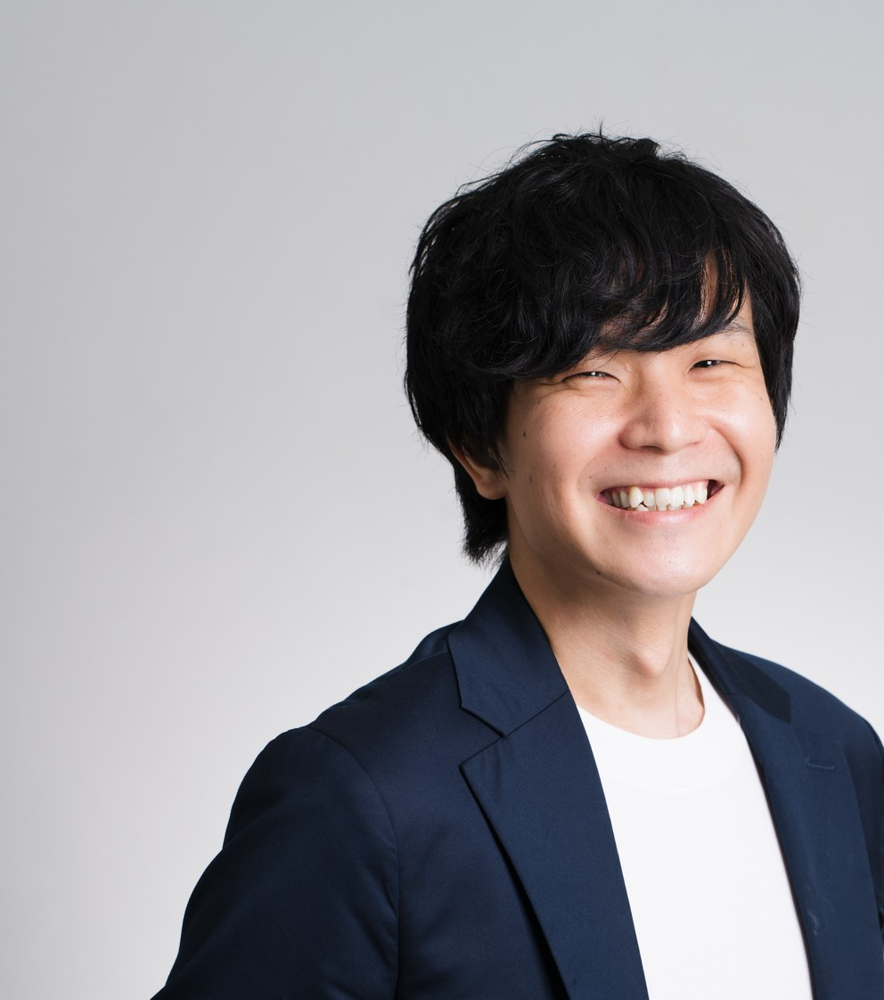
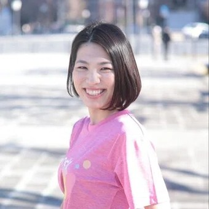
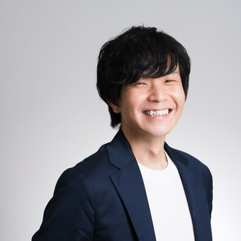

プログラムの改善と研究のためのモニター募集です。アンケート2回（各15分程度）とアプリでの記録にご協力ください。ご協力は任意で、いつでもやめられます。→ 詳しくは裏面へ
アプリに書いた内容はご自身の端末の中に保存され、運営者も原則として見ることはできません。勤務先や支援機関へ共有されることもありません。内容はリアルタイムには確認していません。急ぎのときは医療機関や緊急の窓口へご連絡ください。
| 曜日 | 21:00〜21:20 | 21:25〜21:45 |
|---|---|---|
| 火 | 夜のストレッチ | |
| 木 | 夜のストレッチ | |
| 日 | 疲労回復ストレッチ | 振り返りの会 |
眠る前の時間に合わせて21時開始。1週間の合計はおよそ60〜80分です。
振り返りの会は3名ずつ・2グループに分かれます。当日の出席状況により人数やグループが変わることがあります。主治医から運動を制限されている方は、参加をお控えください。

トレーナーとして15年活動。自身のうつ病の経験から、就労移行支援事業所 約150事業所へ復職に向けた運動プログラムを提供。

就労移行支援・特例子会社・企業人事など約12年、障がい者就労と雇用の両側に携わる。のべ3,000名以上に研修を実施。